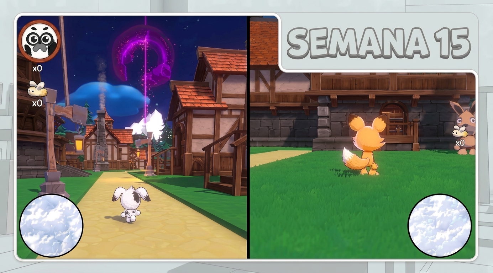
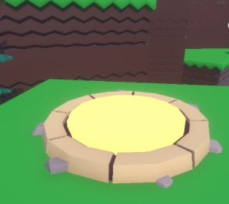

BITÁCORA DE DESARROLLO
Semana 15
Pulido del mapa y mejoras en la interacción
Durante esta semana nos enfocamos en seguir mejorando los escenarios y algunos elementos visuales del videojuego, preparando el proyecto para su próxima versión de entrega.

¿Qué queríamos lograr?
En esta etapa buscamos darle más detalle y vida al mapa, además de seguir unificando la apariencia de los elementos con la identidad visual de Paw Team.
También comenzamos a enfocarnos en los últimos ajustes necesarios para la entrega, teniendo en cuenta que la siguiente versión será la que presentaremos como resultado final del proyecto.
Mejoras y decoración de la ciudad
Realizamos varios cambios en la ciudad del mapa para hacer que el escenario se sintiera más completo y tuviera una mejor distribución. Agregamos caminos alrededor de la ciudad, reorganizamos las casas e incorporamos nuevos detalles, como faroles y humo en las chimeneas.
Sin embargo, durante estos ajustes tuvimos que retirar la iluminación de los faroles debido a problemas de rendimiento. Por esta razón, actualmente todos se encuentran apagados, aunque se mantienen como parte de la decoración del escenario.
Actualización de los botones de interacción
También actualizamos el modelo visual de los botones que estarán distribuidos por el mapa y que permitirán interactuar con diferentes elementos del entorno.
Cambiamos su apariencia para que se integren mejor con la estética general del videojuego y no se sientan como elementos externos al escenario.

Resultado de la semana
Esta semana nos enfocamos principalmente en el apartado visual del escenario. Mejoramos la distribución de la ciudad, agregamos detalles decorativos y actualizamos el diseño de los botones de interacción para mantener una mayor coherencia visual en el juego.
¿Qué observamos o descubrimos?
Durante el proceso también identificamos que algunos elementos visuales, como la iluminación de los faroles, podían afectar el rendimiento del videojuego. Esto nos llevó a realizar ajustes y priorizar que el escenario mantuviera un funcionamiento adecuado.
Además, seguimos comprobando la importancia de mantener una misma línea estética entre los escenarios y los elementos con los que interactúa el jugador.
¿Qué haremos para la entrega final?
- Pulir los escenarios y completar los detalles pendientes del mapa.
- Revisar las mecánicas y comprobar que todos los sistemas funcionen correctamente.
- Corregir errores y bugs que puedan afectar la experiencia de juego.
- Realizar pruebas generales para asegurar que el flujo del gameplay sea consistente.